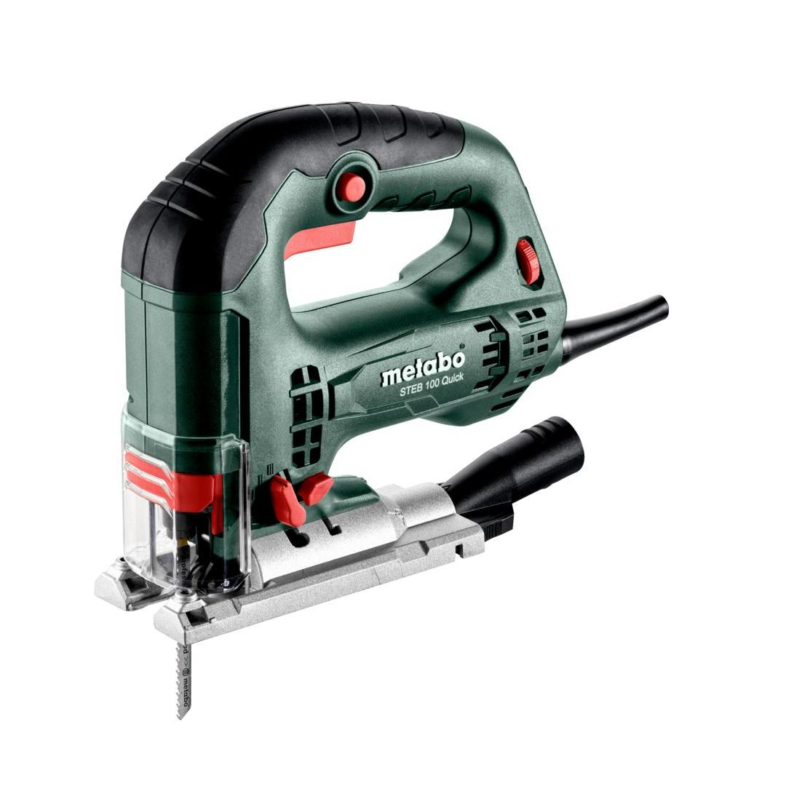
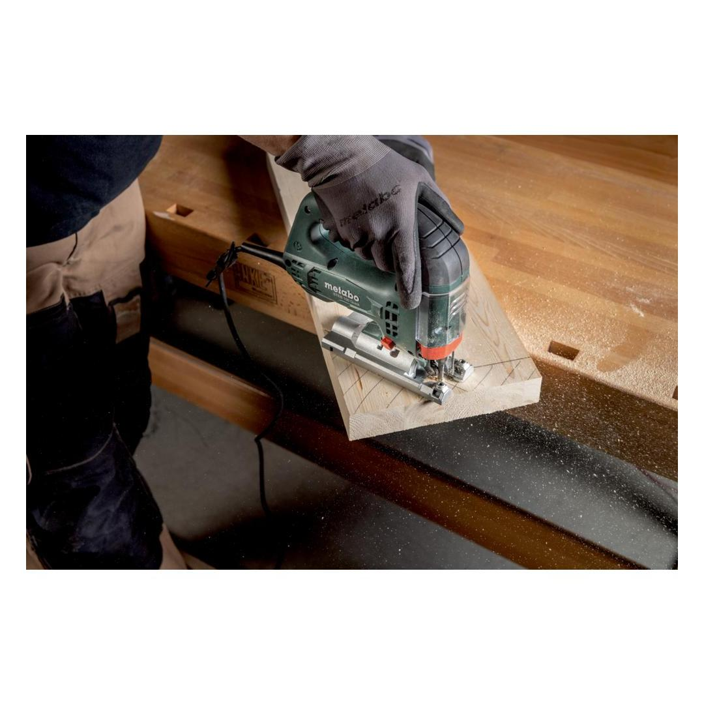
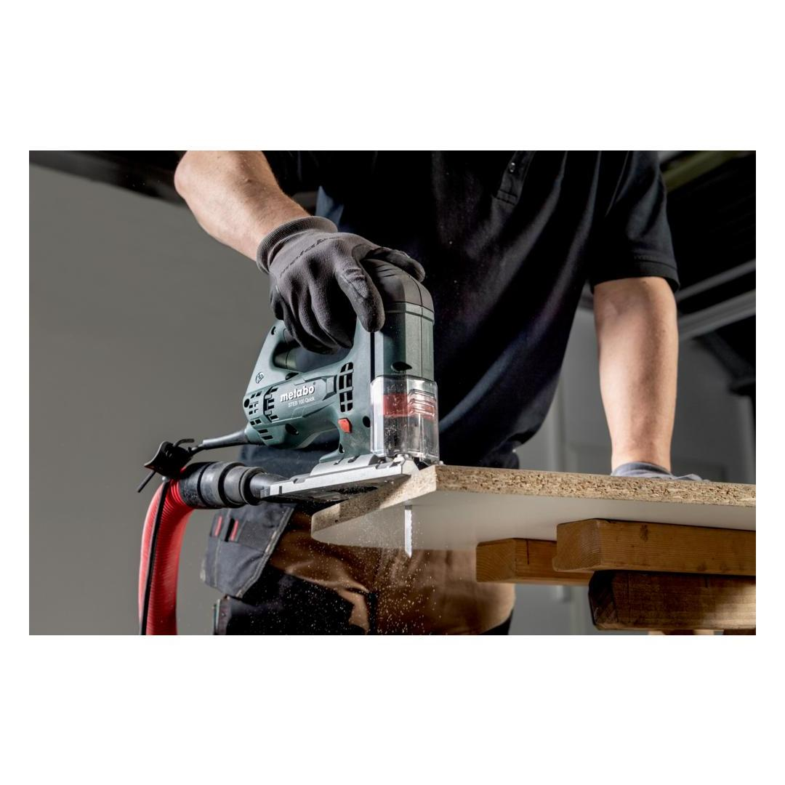
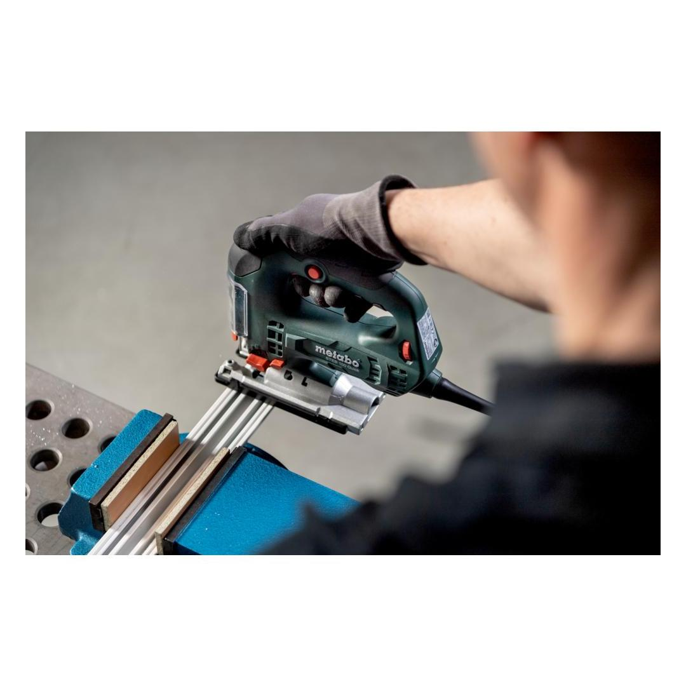

601110500





| Rated input power | 710 W |
| Cutting depth wood | 100 mm / 4 " |
| Strokes in idle | 1000 - 3100 rpm |
| Weight (without power cable) | 2.1 kg / 4.6 lbs |
without key - quick, comfortable and safe
Pendulum stroke for sabre saws and jigsawsselectable pendulum stroke for optimum sawing performance in any material.
Vario-Constamatic (VC)-Full wave electronicsfor working at customised speeds to suit the application materials, and speeds that remain almost constant even under load
| Rated input power | 710 W |
| Output power | 470 W |
| Cutting depth wood | 100 mm / 4 " |
| Cutting depth NF metal | 25 mm / 1 " |
| Cutting depth sheet steel | 10 mm / 3/8 " |
| Swivel range from / to: | - 45 / + 45 ° |
| Pendulum stroke levels | 4 |
| Strokes in idle | 1000 - 3100 rpm |
| Saw blade stroke | 22 mm / 7/8 " |
| Weight (without power cable) | 2.1 kg / 4.6 lbs |
| Cable length | 4 m / 13 " |
| Sawing wood | 13 m/s² |
| Uncertainty of measurement K | 1.5 m/s² |
| Sawing metal | 13.7 m/s² |
| Uncertainty of measurement K | 1.5 m/s² |
| Sound pressure level | 89 dB(A) |
| Sound power level (LwA) | 97 dB(A) |
| Uncertainty of measurement K | 5 dB(A) |
| Extraction Nozzles |
| Protective glass |
| Chip Guard Plates |
| Jigsaw blade wood |
| Hexagonal wrench |